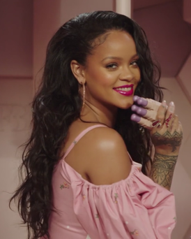

Who is Rihanna?
Born Robyn Rihanna Fenty, on February 20, 1988, in Barbados, Rihanna signed with Def Jam
records at age 16 and in 2005 released her first album Music of the Sun, which sold more
than two million copies worldwide. She went on to release more albums and an array of hit
songs, including "Unfaithful," "Umbrella," "Disturbia," "Take a Bow," "Diamonds" and "We
Found Love." A global pop star with an unrelentingly edgy image, Rihanna has also won
multiple industry accolades, including Grammys and MTV awards.
Songs
In January 2005, music producer Evan Rogers landed Rihanna an audition for Def Jam
Records and its newly minted president, the legendary rapper Jay-Z. "I was in the lobby just
shaking," she recalled. However, once Rihanna opened her voice to sing she regained her
composure. "I remember staring into everybody's eyes in the room while I was singing, and
at that point, I was fearless," she said. "But the minute I stopped singing, I was like, 'Oh my
God, Jay-Z is sitting right in front of me.'" The hip-hop icon was every bit as wowed by
Rihanna's commanding presence as Rogers had been two years earlier, and he signed her on the spot.
'Pon de Replay,' 'Unfaithful,' 'SOS'
Only eight months later, in August 2005, she released her first single, "Pon de Replay," a
reggae-influenced club track that reached No. 2 on the Billboard singles chart and
announced Rihanna as the next up-and-coming pop star. Her first album, Music of the Sun,
released later that month, reached No. 10 on the Billboard albums chart and also featured
the single "If It's Lovin' That You Want." Rihanna released her second album, A Girl Like Me,
the next year, spawning two major hits in "Unfaithful" and "SOS," Rihanna's first No. 1 single.
Movies
Rihanna also began to do movie work, co-starring in the sci-fi flick Battleship (2012) and later
lending her voice to the lead character in the animated blockbuster Home (2015).
In 2017 Rihanna made recurring appearances in season 5 of Bates Motel, and earned a
prominent role in the science fiction flick Valerian and the City of a Thousand Planets. That
year, fans also got their first glimpse of the pop superstar alongside Sandra Bullock, Cate
Blanchett and Anne Hathaway in trailers for Ocean's 8, a female-led spinoff of the popular
Ocean's Trilogy, set for a June 2018 release.